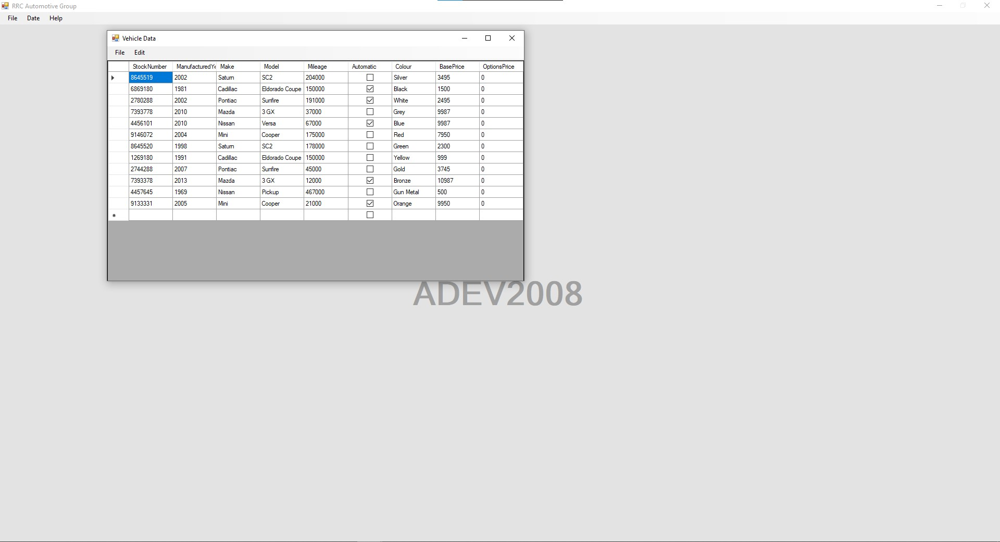
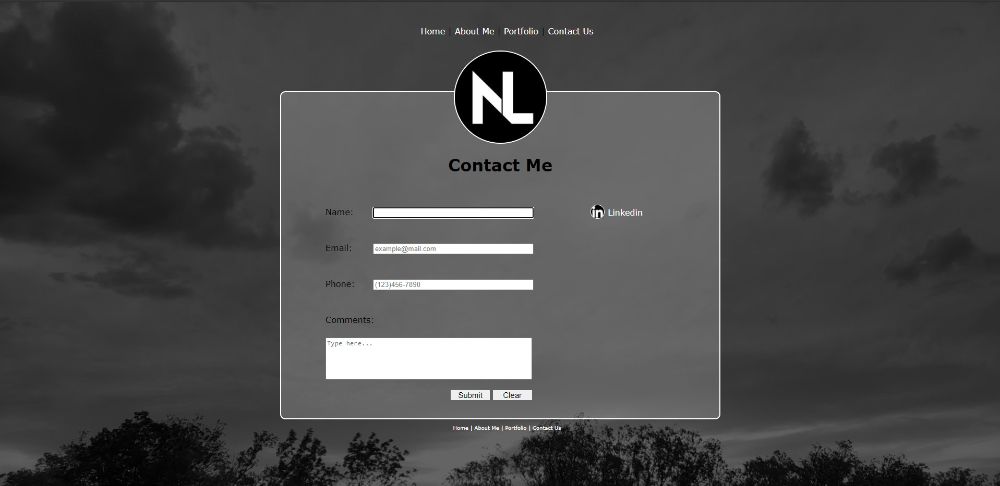
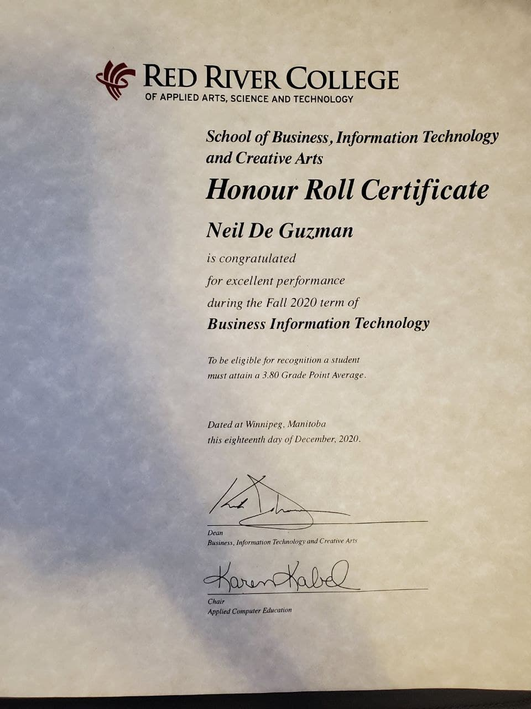
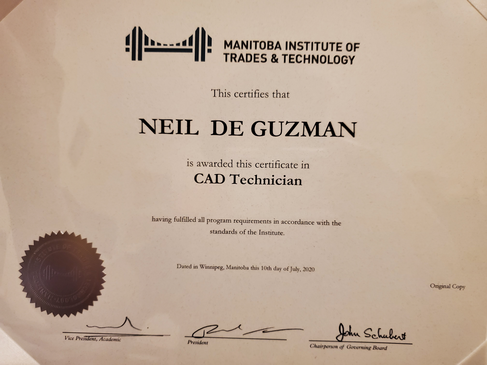

Portfolio
This page contains a qucik snippet of current and recent project that I have done. I have include links to the portfolios that I have created fro Red River College. I have also include a couple of personal achievements
I have experience writing code in both Java and C#. This picture above was my last assignment for my ADEV class. That form was created using data binding, collections, datasets, and a library of classes. The form has many built-in functions that properly work and catches expectations.
I have experience in creating a website of my design and one with a requested design. This picture is a view of the contact page of this website you are currently viewing. As of right now, the contact page does nothing but display errors. I do plan on updating this website with new CSS styles and new information.
This is my certificate for Honour Roll in term 1 during the BIT program. This is a small achievement in showing how hard working I am as a student
This is my certificate is from a course I took at MITT. The course taken was CAD Tech. While this course is mainly about drafting, it allowed me to develop my teamwork and team management skills.